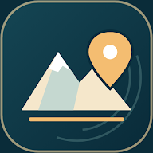

Hafıza & bulmaca oyunu
KnoWay
Doğru yolu aklında tut, engelleri aş ve astronotunu bir sonraki seviyeye taşı. Sade bir dünyada dikkatini ve hafızanı test et.
Chill Studio'da merakı harekete geçiren oyunlar ve öğrenmeyi kolaylaştıran uygulamalar geliştiriyorum.
Uygulamaları keşfet
Hafıza & bulmaca oyunu
Doğru yolu aklında tut, engelleri aş ve astronotunu bir sonraki seviyeye taşı. Sade bir dünyada dikkatini ve hafızanı test et.

Eğitim & interaktif haritalar
Dağlardan şehirlere, Türkiye coğrafyasını harita üzerinde keşfet. Ekrandaki konumu bul, tekrar et ve KPSS'ye kendi hızında hazırlan.
Ben Samet Can Çil. Chill Studio adıyla Android için oyunlar ve uygulamalar geliştiriyorum. KnoWay'de hatırlamanın heyecanını, KPSS Coğrafya'da ise keşfederek öğrenmeyi öne çıkarıyorum. Ortak noktaları: sade bir deneyim, net bir amaç.
Her iki uygulama için destek ve geri bildirimlerinizi buradan iletebilirsiniz.